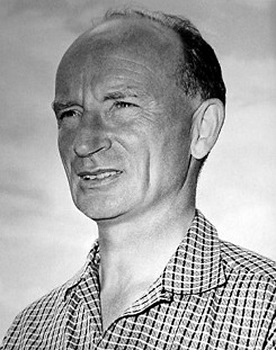

Um sinaleiro possue 3 cores : verde, amarelo e vermelho. Cada um possue um significado que necessita ser obdecido para vôce ficar em segurança
Orienta o operador do guindaste com sinais específicos ou com auxílio de rádios comunicadores para movimentação de cargas, controlando peso e condição de amarrações, alça e trava de fechamento.
A utilização dos mesmos sinais com luzes elétricas, por sua vez, teve início em 1914 na cidade de Cleveland, Estados Unidos. As luzes eram controladas por guardas que se revezavam no local. Em 1917, a luz amarela foi acrescentada aos sinais de trânsito de Detroit, no mesmo país – e o sinaleiro automático, que dispensava a operação manual, surgiu na década seguinte.
Eduardo Sandri n11.
Eduardo Krokoscz n10.
Eros Borghi Skora n13.
Felipe Kauan Pereira n14.